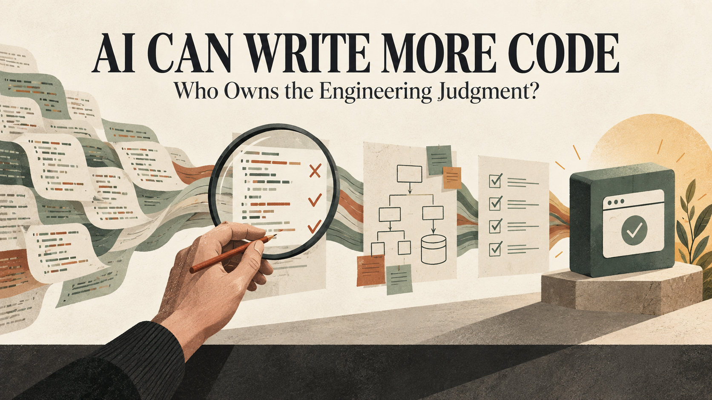

If an AI assistant writes most of a feature, who is responsible when that feature fails in production?
The answer is not the model. It is still the people and organization that chose the requirement, accepted the implementation and released it.
AI coding tools are becoming better at producing functions, tests, migrations, documentation and complete application changes. That can reduce repetitive work and shorten feedback loops. It can also create a dangerous illusion: because code appeared quickly and looks familiar, it must be understood.
The scarce skill is moving from typing every line to exercising sound engineering judgment over a much larger volume of proposed work.
Before code exists, someone must decide what the system should do. Requirements contain ambiguity, incentives, legal constraints, edge cases and unstated assumptions. A technically correct implementation can still solve the wrong problem.
An experienced engineer asks questions the prompt may not contain. What happens when two users act at the same time? Which system is authoritative? Can this operation be reversed? What data should never reach the model? How will support investigate a disputed result? What is the migration plan for existing records?
AI can help explore those questions. It should not silently answer them on behalf of the business.
There is rarely one universally correct architecture. A team chooses between simplicity and flexibility, consistency and availability, managed services and portability, speed today and maintenance tomorrow.
Generated code may optimize for the local task it can see. It may introduce a new dependency for something the codebase already handles, duplicate an existing abstraction or ignore operational standards hidden outside the prompt.
The engineer must place the change inside the wider system. That requires knowledge of data ownership, failure boundaries, team capacity, security posture, cost and the product roadmap.
AI-generated code can be syntactically clean and still be wrong. It may call an API that changed, mishandle a boundary condition, weaken authorization, produce an expensive query or write a test that confirms its own incorrect assumption.
Review therefore needs evidence. Run the code. Inspect the diff. Test expected behaviour and failure paths. Check dependency documentation. Use static analysis, type checks, security scanning and performance measurements where they matter.
The review should be proportional to impact. A documentation correction and a payment authorization change do not deserve the same level of scrutiny.
Coding agents are most useful when they can see repositories, issue trackers, logs and development tools. That context can also contain secrets, private customer information, vulnerable code or untrusted instructions.
Teams should limit what an assistant can access, separate development and production credentials, review tool calls, protect branches and scan both dependencies and committed secrets. An agent should not receive production access simply because a task mentions production.
OWASP’s agentic AI guidance emphasizes risks created by excessive agency, tool misuse and identity or privilege abuse. Those are system-design problems. A strong model cannot compensate for unrestricted credentials.
When one developer can generate several changes in the time previously needed for one, review capacity becomes the constraint. Teams may merge faster than they can reason.
The answer is not to abandon AI. It is to improve the workflow:
AI should increase the amount of validated progress, not merely the amount of code.
Some tasks are well suited to delegation: repetitive refactors, test scaffolding, documentation drafts, codebase searches and isolated prototypes. Others depend heavily on organizational context, user trust or irreversible decisions.
A good engineer knows the difference. They also know when a manual implementation is clearer than a clever generated abstraction, when a database change needs staged migration, and when a customer-facing incident deserves human communication rather than an automated response.
AI does not remove the need for engineers to understand programming fundamentals. In fact, reviewing unfamiliar output requires a strong mental model of the language, framework, database and network.
For junior developers, the risk is accepting code before they can explain it. For senior developers, the risk is using speed to justify wider changes without sufficient validation. Both need deliberate practice: read the diff, predict its behaviour, test the prediction and investigate when reality disagrees.
Mentorship also matters. Teams should teach how to challenge generated output, not only how to prompt for it.
The person who merges a change owns more than its formatting. They accept its behaviour, risks and maintenance cost. The team that deploys it owns the customer impact. The company that benefits from it owns the duty to govern it.
This does not make AI coding tools less valuable. It explains how to use them professionally.
The future engineer may type fewer routine lines and coordinate more automated work. However, requirements, architecture, verification, security and accountability do not disappear. They become the work that matters most.
I help teams turn product requirements into maintainable web, backend, fintech and automation systems, using AI where it improves delivery without outsourcing engineering responsibility. Email hello@massoda.me or contact me on WhatsApp.